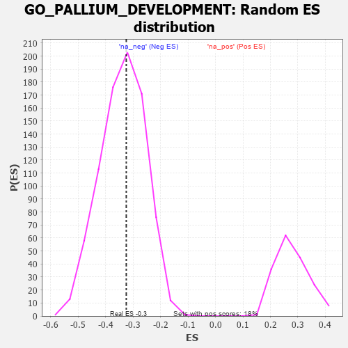

| | | Dataset | 7d |
| Phenotype | NoPhenotypeAvailable |
| Upregulated in class | na_neg |
| GeneSet | GO_PALLIUM_DEVELOPMENT |
| Enrichment Score (ES) | -0.3249608 |
| Normalized Enrichment Score (NES) | -0.9586505 |
| Nominal p-value | 0.54126215 |
| FDR q-value | 0.90647054 |
| FWER p-Value | 1.0 |
Table: GSEA Results Summary
 Fig 1: Enrichment plot: GO_PALLIUM_DEVELOPMENT
Fig 1: Enrichment plot: GO_PALLIUM_DEVELOPMENT
Profile of the Running ES Score & Positions of GeneSet Members on the Rank Ordered List
| PROBE | GENE SYMBOL | GENE_TITLE | RANK IN GENE LIST | RANK METRIC SCORE | RUNNING ES | CORE ENRICHMENT | | 1 | H2AX | | | 20 | 4.738 | 0.1376 | No |
| 2 | EMX2 | | | 117 | 1.451 | 0.1684 | No |
| 3 | ARX | | | 322 | 0.782 | 0.1658 | No |
| 4 | BAX | | | 387 | 0.711 | 0.1787 | No |
| 5 | LRP1 | | | 470 | 0.648 | 0.1876 | No |
| 6 | SRF | | | 542 | 0.615 | 0.1968 | No |
| 7 | EMX1 | | | 1143 | 0.455 | 0.1344 | No |
| 8 | NSUN5 | | | 1230 | 0.442 | 0.1366 | No |
| 9 | UBA6 | | | 2114 | 0.289 | 0.0337 | No |
| 10 | XRCC1 | | | 2287 | 0.262 | 0.0197 | No |
| 11 | KDM1A | | | 2447 | 0.237 | 0.0066 | No |
| 12 | SLIT2 | | | 2724 | 0.195 | -0.0225 | No |
| 13 | NR2E1 | | | 2844 | 0.177 | -0.0323 | No |
| 14 | LEF1 | | | 3037 | 0.144 | -0.0522 | No |
| 15 | FEZ1 | | | 3055 | 0.142 | -0.0502 | No |
| 16 | HDAC1 | | | 3086 | 0.138 | -0.0499 | No |
| 17 | PAX6 | | | 3170 | 0.127 | -0.0566 | No |
| 18 | CDK5 | | | 3480 | 0.080 | -0.0933 | No |
| 19 | NF1 | | | 3713 | 0.040 | -0.1214 | No |
| 20 | WDR47 | | | 3823 | 0.023 | -0.1345 | No |
| 21 | MCPH1 | | | 4039 | -0.014 | -0.1612 | No |
| 22 | CRK | | | 4139 | -0.031 | -0.1728 | No |
| 23 | PAX5 | | | 4255 | -0.051 | -0.1858 | No |
| 24 | LHX5 | | | 4332 | -0.066 | -0.1935 | No |
| 25 | NTRK2 | | | 4543 | -0.104 | -0.2169 | No |
| 26 | ATOH1 | | | 4615 | -0.121 | -0.2223 | No |
| 27 | LMX1A | | | 4631 | -0.124 | -0.2205 | No |
| 28 | LHX2 | | | 4716 | -0.143 | -0.2269 | No |
| 29 | RTN4 | | | 4783 | -0.154 | -0.2307 | No |
| 30 | TRA2B | | | 4962 | -0.191 | -0.2475 | No |
| 31 | SMO | | | 5195 | -0.247 | -0.2696 | No |
| 32 | PTEN | | | 5262 | -0.261 | -0.2702 | No |
| 33 | GRIN1 | | | 5381 | -0.291 | -0.2765 | No |
| 34 | NDE1 | | | 5578 | -0.339 | -0.2912 | No |
| 35 | ASPM | | | 5637 | -0.358 | -0.2879 | No |
| 36 | BBS4 | | | 5806 | -0.407 | -0.2971 | No |
| 37 | SUN2 | | | 5893 | -0.433 | -0.2952 | No |
| 38 | TACC2 | | | 6130 | -0.514 | -0.3098 | Yes |
| 39 | FEZF2 | | | 6150 | -0.519 | -0.2968 | Yes |
| 40 | PEX13 | | | 6255 | -0.557 | -0.2935 | Yes |
| 41 | CDON | | | 6378 | -0.607 | -0.2909 | Yes |
| 42 | BBS2 | | | 6383 | -0.608 | -0.2735 | Yes |
| 43 | ROBO1 | | | 6577 | -0.699 | -0.2772 | Yes |
| 44 | PTPRS | | | 6646 | -0.738 | -0.2639 | Yes |
| 45 | EGFR | | | 6708 | -0.765 | -0.2490 | Yes |
| 46 | GSK3B | | | 6719 | -0.768 | -0.2275 | Yes |
| 47 | LRP8 | | | 6931 | -0.889 | -0.2279 | Yes |
| 48 | FAT4 | | | 6948 | -0.901 | -0.2033 | Yes |
| 49 | LAMB1 | | | 7220 | -1.094 | -0.2051 | Yes |
| 50 | EFHC1 | | | 7317 | -1.193 | -0.1819 | Yes |
| 51 | NPY | | | 7465 | -1.356 | -0.1604 | Yes |
| 52 | XRN2 | | | 7488 | -1.384 | -0.1222 | Yes |
| 53 | DCLK2 | | | 7529 | -1.439 | -0.0847 | Yes |
| 54 | CASP3 | | | 7747 | -1.902 | -0.0559 | Yes |
| 55 | PLCB1 | | | 7904 | -2.841 | 0.0085 | Yes |
Table: GSEA details [plain text format]

Fig 2: GO_PALLIUM_DEVELOPMENT: Random ES distribution
Gene set null distribution of ES for GO_PALLIUM_DEVELOPMENT